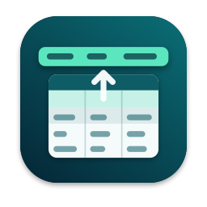

Tablelift
What does Tablelift do?
Tablelift opens database files made with Microsoft Access (.mdb and .accdb, Access 97 to 365) on your Mac, iPad and iPhone. You can browse every table and row, search, filter and sort, look at the schema, and export the data to CSV, Excel (XLSX), JSON or SQLite. Files are opened read-only and never changed. There is no account, subscription or advertising.
How to use it
- Try the sample: on the first screen, tap Try the sample database to explore a small invented company database.
- Open your file: Open a database…, drag a file onto the Mac window, or use Open in Tablelift from the Files app.
- Browse: pick a table in the sidebar. Rows are shown 500 at a time; use the arrows or type a row number at the bottom right. Double-click (or double-tap) a row to see every field in full.
- Find rows: type in the search field to search all columns, add filters with Filter (contains, is, is not, starts with, greater/less than, empty), and click a column header to sort.
- Schema: the Schema button lists columns, types, sizes, primary keys and indexes for every table.
- Copy and export: select rows and copy (⌘C on Mac) to paste into a spreadsheet, or use Export for CSV, Excel, JSON or SQLite.
Which files open?
- Jet 3 (Access 97), Jet 4 (Access 2000–2003) and ACE (Access 2007, 2010, 2016, 2019/365) files with the .mdb or .accdb extension.
- Supported value types: text (including Unicode-compressed text), Long Text / memo, numbers, Currency and Decimal (kept exact), Date/Time (also before 1900) and Date/Time Extended, Yes/No, Replication ID, Large Number. Binary and OLE Object fields show their size; SQLite export keeps their bytes.
- Not shown: forms, reports, macros, VBA modules and query designs (saved query names are listed). Linked tables are listed, but their rows live in another file.
- Encrypted or password-protected databases are detected and explained; Tablelift does not open them and never tries to break a password. Remove the password or encryption in Microsoft Access, then open the copy.
- If a file is damaged, Tablelift says which page could not be read. Running Compact & Repair in Microsoft Access or using an older copy often helps.
Free and Pro
- Free: open any file, browse every table and row, search, filters, sort, schema, copy and CSV export of rows among the first 1,000 rows of each table (filtered and sorted views included).
- Pro (one-time, non-consumable in-app purchase): export every row; Excel, JSON and SQLite formats; export a whole database at once; batch-convert many files into a folder; saved queries. No subscription. One purchase works on Mac, iPad and iPhone with the same Apple Account.
- Pro is offered when you tap one of those features, with a preview of your own data in that format. The price shown is the App Store's price for your country.
- Restore: on the purchase screen, or Mac: Tablelift › Settings; iPhone/iPad: the first screen › About, privacy and restore purchase. Refunds are handled by Apple at reportaproblem.apple.com.
Export details
- CSV: UTF-8 with a byte-order mark, comma separated, quotes where needed. A whole-database CSV export is a ZIP with one file per table.
- Excel: one sheet per table with a bold header row; numbers and dates are real cell values. Dates before 1900 and numbers with more than 15 digits are written as text so they stay exact. A table with more than 1,048,575 rows continues on extra sheets. Cells hold at most 32,767 characters (Excel's limit).
- JSON: one object with every table as an array of records; decimals are exact, dates are ISO 8601, binary values are Base64 (up to 16 MB each).
- SQLite: one table per Access table with typed columns; Currency and Decimal as exact text, dates as text (YYYY-MM-DD HH:MM:SS), OLE/binary as BLOB.
Contact
Microsoft and Access are trademarks of the Microsoft group of companies. Tablelift is an independent app and is not affiliated with or endorsed by Microsoft.
한국어
Tablelift는 Microsoft Access로 만든 데이터베이스 파일(.mdb, .accdb, Access 97~365)을 Mac, iPad, iPhone에서 엽니다. 모든 테이블과 행을 보고, 검색·필터·정렬하고, 스키마를 확인하고, CSV·Excel(XLSX)·JSON·SQLite로 데이터를 내보냅니다. 파일은 읽기 전용으로 열며 바꾸지 않습니다. 계정·구독·광고가 없습니다.
- 샘플: 첫 화면에서 ‘샘플 데이터베이스 열기’를 누르면 가상의 회사 데이터베이스를 바로 볼 수 있습니다.
- 내 파일: ‘데이터베이스 열기…’, Mac 창으로 끌어다 놓기, 파일 앱의 ‘Tablelift에서 열기’.
- 보기·찾기: 사이드바에서 테이블을 고르면 행이 500개씩 보입니다. 검색창은 모든 열을 찾고, ‘필터’로 조건을 걸고, 열 머리글을 누르면 정렬됩니다. 행을 두 번 누르면 모든 필드를 자세히 봅니다.
- 지원 파일: Jet 3(Access 97), Jet 4(Access 2000–2003), ACE(Access 2007·2010·2016·2019/365). 폼·보고서·매크로·VBA·쿼리 디자인은 표시하지 않습니다. 연결된 테이블은 목록에만 보이고 데이터는 다른 파일에 있습니다.
- 암호화·암호 파일: 감지해서 이유를 알려 주며 열지 않습니다. 암호를 풀려고 시도하지 않습니다. Microsoft Access에서 암호나 암호화를 해제한 사본을 여세요.
- 무료: 파일 열기, 모든 테이블·행 보기, 검색, 필터, 정렬, 스키마, 테이블의 처음 1,000행에 속한 행의 복사·CSV 내보내기(필터·정렬한 화면 포함).
- Pro(한 번 구입, 비소모성): 모든 행 내보내기, Excel·JSON·SQLite, 데이터베이스 전체 내보내기, 여러 파일 일괄 변환, 저장된 쿼리. 구독 없음. 같은 Apple 계정의 Mac·iPad·iPhone에서 사용합니다. 복원은 구입 화면, Mac의 Tablelift › 설정, iPhone·iPad 첫 화면의 ‘정보, 개인정보, 구입 복원’에서 합니다. 환불은 Apple(reportaproblem.apple.com)에서 처리합니다.
Microsoft와 Access는 Microsoft 그룹 회사의 상표입니다. Tablelift는 독립 앱이며 Microsoft와 제휴하거나 보증받지 않았습니다.